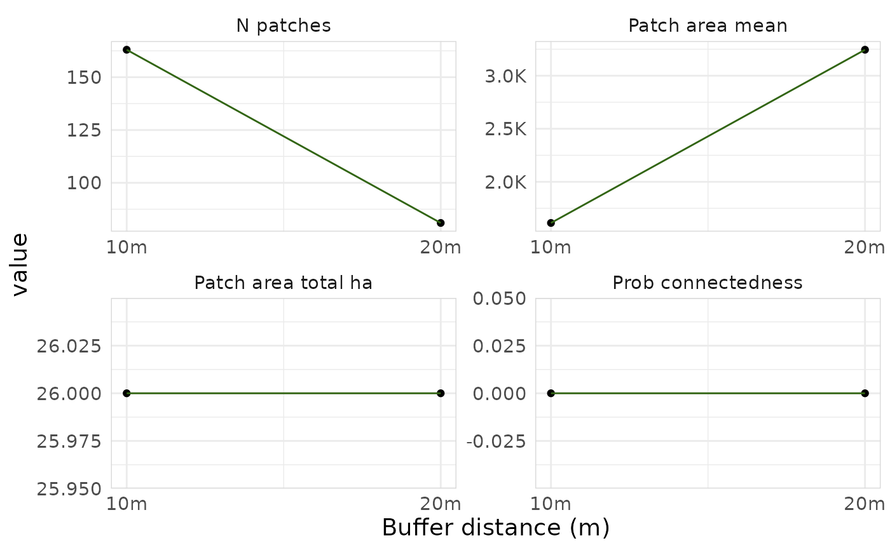

Creates faceted line plots showing how connectivity metrics change with different buffer distances. This works best when you have multiple buffer distances, otherwise it will just be a plot with one point.
Examples
lizard_habitat <- example_habitat()
lizard_barrier <- example_barrier()
results <- purrr::map(
c(10, 20),
function(d) {
full <- habitat_connectivity_full(lizard_habitat, lizard_barrier,
distance = d, verbose = FALSE)
summarise_connectivity(
area_squared = full$areas_connected$area_squared,
area_total = full$areas_connected$area,
buffer_distance = d,
target_resolution = 500,
data_resolution = 10,
aggregation_factor = 50,
species_name = "Blue-tongued Lizard"
)
}
) |> purrr::list_rbind()
plot_connectivity(results)
